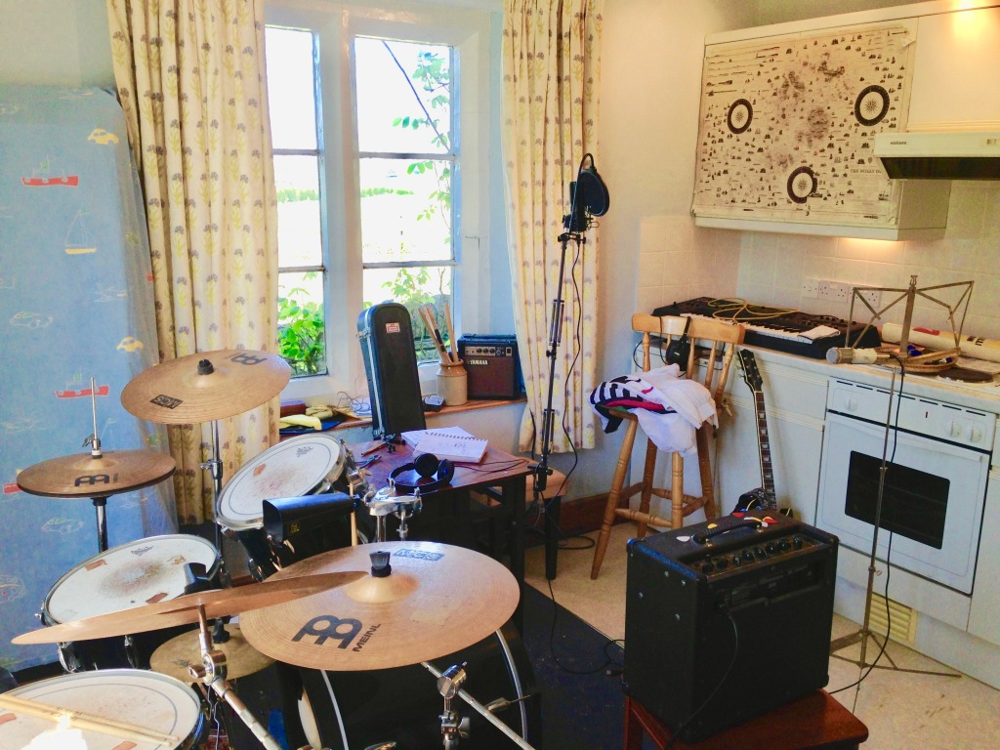

Mid 2019, I sat around thinking about the few months I had spent living at 37 Stanley Avenue, the house second from the end of a very long redbrick terrace in Rusholme, Manchester. I wrote the words to a song, No.37, and put with the others I was planning to record one day. These songs and the people in them are all real. It’s basically my equivalent of a personal diary. I wanted to do them all with full instrumentation just to get more power out them. I have quite a short attention span with music and with just a guitar or piano and singing, there is usually not enough going on for me. It was a lot of fun to play, and that's really the only point of doing it. After a bit of messing around with the recording equipment and recording a few demos, in late 2019 I started trying to make a few songs properly.
I had a song called My Love recorded in 2018 that was played on BBC Radio, which was pretty cool.

For the cover artwork, I don’t know anything
about what makes a good picture, which led me to contact a really excellent artist in
Copenhagen. Em is a musician too in fact, as the singer of Atomic Blue, as well as an
idiosyncratic photographer. I think he is few years older than me, because he just seems
like a fairly wise owl.
A few songs are set in the past tense, or at least drawn very linearly from
experiences. Sometimes situations that we are immersed in are not what they seem at the
time. When you are so close to something you can’t picture its entirety, and it takes time
to realise its significance. I think this process is what makes the past easiest to write
about for me. There is often a disconnected percolation of ideas in songs relating to the
here and now but this isn’t an artistic choice for effect its just how life is. The past
has certain dimensions in time and amplitude and words can’t replace.
This thought has made me more careful with words, because you can never truly take them
back, but then also you can never replace the way you felt at a certain time.